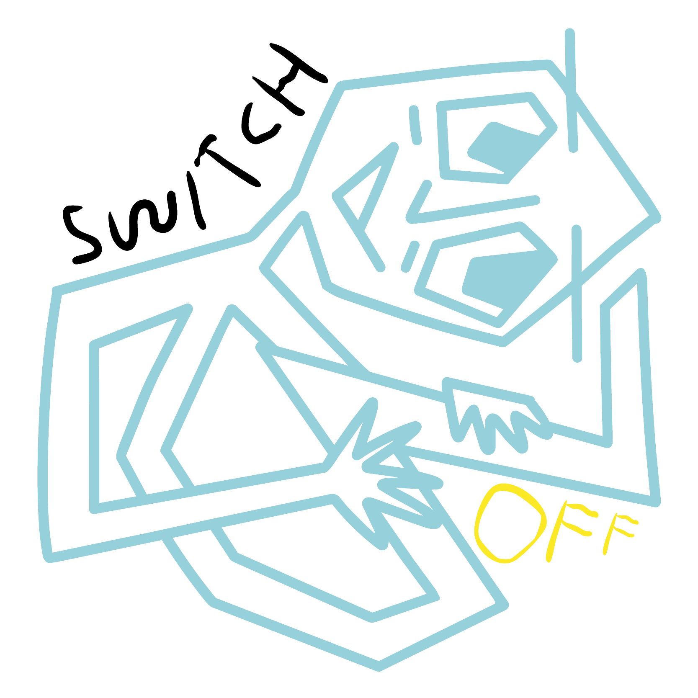

SWITCHOFFRedirection vers switch.off…
Cliquez ici si la redirection ne fonctionne pas.
Le site est momentanément injoignable (l'ordinateur qui l'héberge est peut-être éteint). Vous pouvez tout de même découvrir les expériences et vous inscrire ci-dessous — rien n'est perdu, votre inscription sera intégrée à la vraie base dès que le site sera de nouveau en ligne.